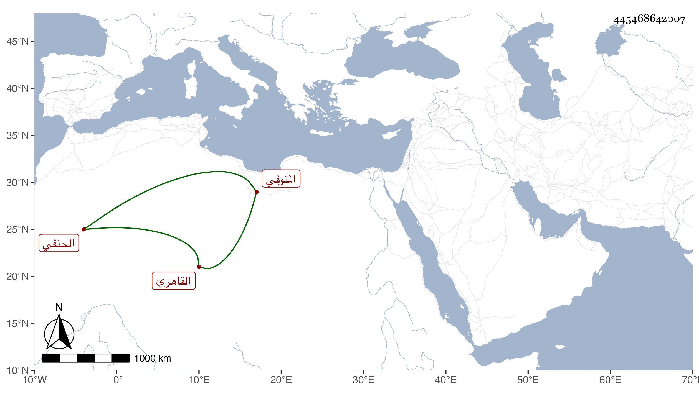

0902Sakhawi.DawLamic.ITO20230111-ara1.EIS1600.445468642007
Biography ID: 445468642007
إبراهيم بن موسى بن محمد بن علي المنوفي ثم القاهري الحنفي ويعرف بابن زين الدين وهو لقب جده ممن سمع هو وأخوه أحمد وأبوهما في مسلم والنسائي بقراءتي واشتغل وتنزل في الجهات وصاهر البدر بن الشمس الجلالي على ابنته وخدم تنبك قرا وتمول ثم استلبه ما حصله أوجله .
